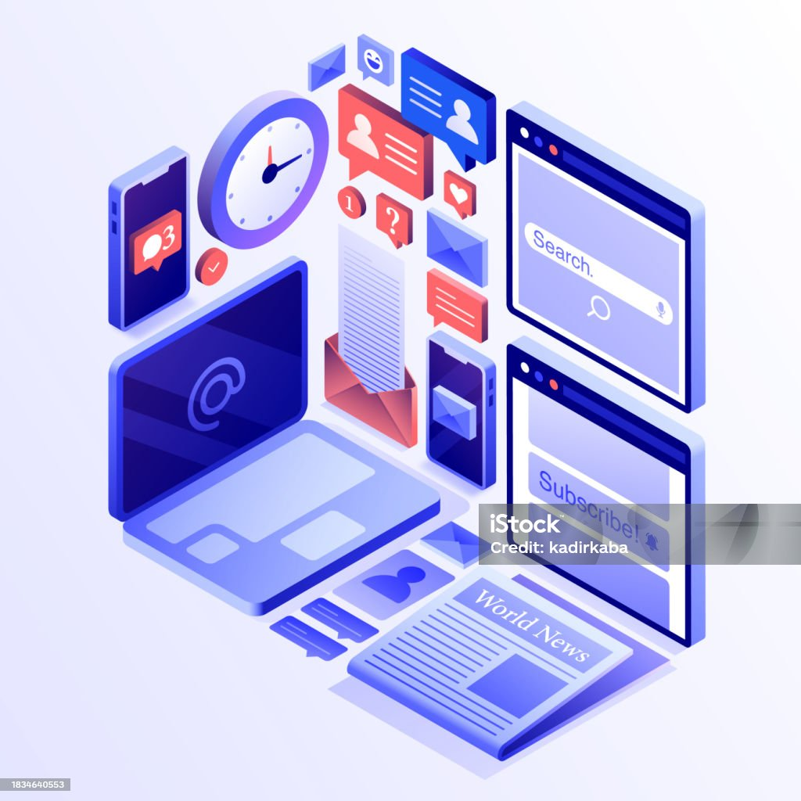

Derrière le Code : L'Artisan de Votre Espace Web
Plongez dans l'univers de Mohammed-yassine , un parcours semé d'expériences chez Sopra Steria, Yves Rocher, Michelin, et une passion pour façonner le web de demain.

Bienvenue sur la page qui vous en dira un peu plus sur l'âme derrière [Nom de l'entreprise], moi-même, [Votre Prénom et Nom]. Avec un parcours académique riche couronné par des diplômes prestigieux dans le domaine de l'informatique et du développement web, ma passion pour la technologie a toujours été le moteur de ma carrière.
Mon voyage professionnel a commencé chez Sopra Steria, où j'ai plongé dans le monde fascinant du développement logiciel, travaillant sur des projets qui non seulement m'ont permis de mettre en pratique mes connaissances académiques mais aussi d'affiner mes compétences à travers des défis techniques complexes. Cette expérience a été le premier jalon d'un parcours professionnel riche et diversifié.
Ensuite, chez Yves Rocher, j'ai eu l'opportunité d'explorer l'intersection entre le développement web et l'e-commerce. Travailler dans un environnement axé sur le consommateur m'a permis de développer une compréhension profonde de l'importance de l'expérience utilisateur, tout en me permettant de contribuer à la croissance digitale d'une marque internationalement reconnue.
Ma curiosité et ma soif d'apprendre m'ont ensuite mené à Michelin, où j'ai pu contribuer à des projets à la pointe de l'innovation, en mettant l'accent sur l'amélioration de l'expérience client à travers des solutions numériques créatives. Cette étape a renforcé ma conviction que la technologie, lorsqu'elle est bien appliquée, peut transformer les entreprises et enrichir la vie des gens.
Aujourd'hui, à travers [Nom de l'entreprise], je mets toute cette richesse d'expérience, de passion et de savoir-faire à votre service. Que ce soit pour développer un site web captivant, créer des solutions logicielles sur mesure ou transformer votre présence digitale, je suis ici pour vous aider à réaliser vos ambitions numériques.
Chez [Nom de l'entreprise], nous croyons que derrière chaque ligne de code, il y a une personne qui rêve de créer quelque chose d'unique et d'impactant. C'est cette philosophie qui guide chacun de nos projets, assurant que nous livrons non seulement des solutions technologiques de premier ordre, mais aussi une expérience personnalisée qui résonne avec vous et vos clients.
Je vous invite à explorer notre site pour découvrir en détail nos services et à me contacter directement pour discuter de vos projets et de la manière dont nous pouvons vous accompagner dans votre réussite digitale.